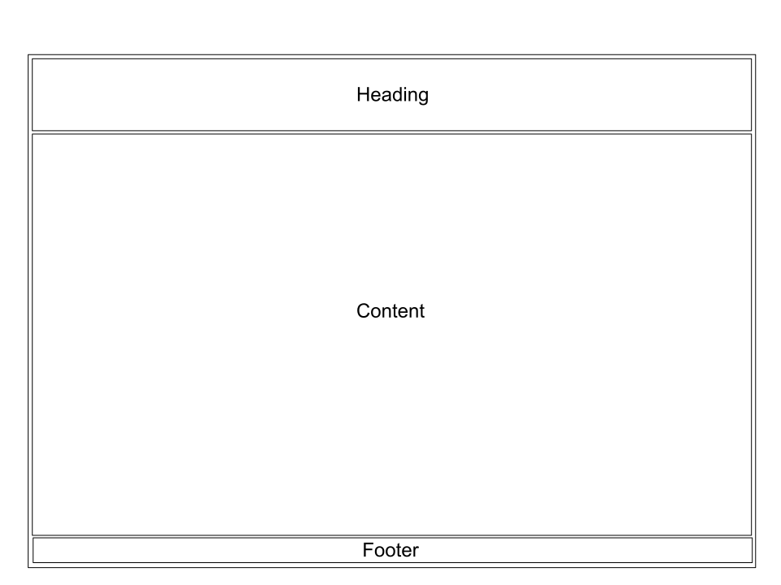
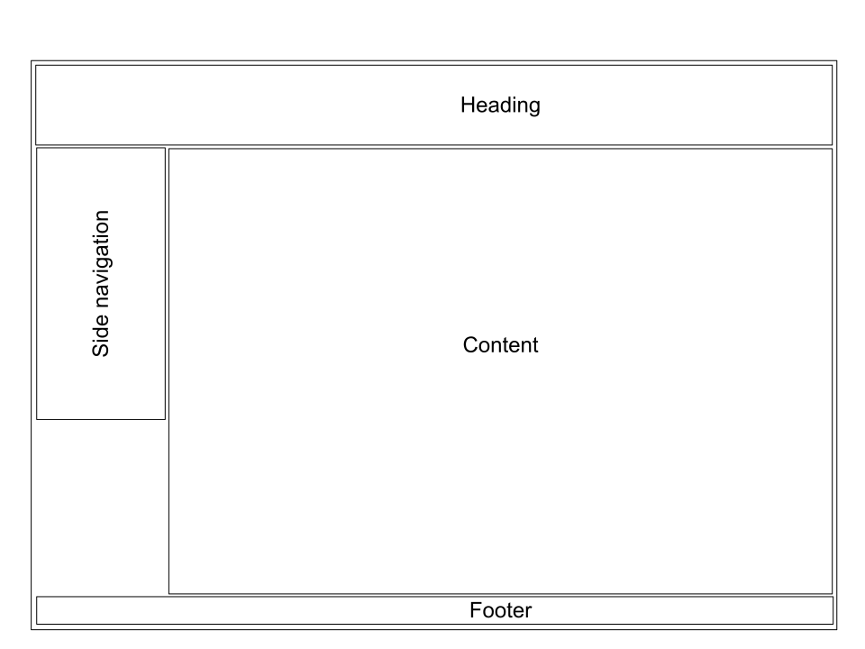

Introduction
Static.css is a simple light css library for building web-docs / simple web-pages. Unlike most css frameworks it does not contain too many contents; which eventually helps to build a lighter web platform . It gives exacly what you initially need for building web-doc / web-page. And this documentation helps to override for further customization. As most of you already assumed, this library is not suited for building a dynamic web-app. It is specially designed for building simple light weight web pages. Even though it is a lighter library compared to other css frameworks, it covers almost all essential features you need to create your page. Also a cool feature, this library is not JavaScript dependent! Though many people may see this as a drawback, it is intentionally done to make the library light weight and use the full potential of HTML+CSS (like old websites!).
To start using this libray either use stylesheet links or download the bundle. And follow the Getting Started section to know more about tags & how to override for further customization.

This work is licensed under a Creative Commons Attribution-NonCommercial 4.0 International License.
Development
Static.css intially developed by:
This project is open souce. Feel free to introduce any new features or other further development. Visit GitHub repository.
Download / Installation
For quick access I recommend using the direct link to our library. Use one from Static.min.css / Static.css file. Both are same but the .min version has all the unnecessary character removed to make the file size smaller.
Copy direct link for Static.css:
https://jayedrafi.com/......,in.css
Copy direct link for Static.min.css:
https://jayedrafi.com/......,in.css
Or, Download the Static.css bundle file:
Getting Started
This sections covers the details about existing tags and override process.
Heading
Style option 1: Logo + Title

Title
<div class="header">
<img src="./image_folder/logo.jpg" alt="logo" class="header-logo">
<p class="header-text">Title</p>
</div>
Style option 2: Title
Title
<div class="header">
<p class="header-text">Title</p>
</div>
Adding background color: Applicable for both option 1 & 2
Title
Use the source code below to add color. Only replace the color code (#b6ccfe) into desired color.
<div class="header" style="background-color: #b6ccfe;">
<p class="header-text">Title</p>
</div>
Body
Body contains most parts of the site layout. All tags except <footer> tag should remain inside HTML body.
Style option 1: Body without side navigation
In this case use only heading class & content class inside HTML body. You can also opt-out heading by not using the heading class.

<body>
<div class="content">
</div>
</body>
Style option 2: Body with left hand navigation
Following from option 1, to add an left hand navigation use side-nav-left class before content class.

<body>
<div class="side-nav-left">
<p class="topic"> TOPIC NAME </p>
<p><a href="#Static.css"> OPTION#1 </a></p>
<p><a href="#Static.css"> OPTION#2 </a></p>
</div>
<div class="content">
</div>
</body>
Style option 3: Body with right hand navigation
Following from option 1, to add an right hand navigation use side-nav-right class before content class.
<body>
<div class="side-nav-right">
<p class="topic"> TOPIC NAME </p>
<p><a href="#Static.css"> OPTION#1 </a></p>
<p><a href="#Static.css"> OPTION#2 </a></p>
</div>
<div class="content">
</div>
</body>
As discussed in the previous section, you can choose from two side navigation options (left & right). Both options are built with device compatibility feature. Here are some information you should know about default side navigations:
Left hand side navigation class: side-nav-left
Right hand side navigation class: side-nav-right
- Highlight topic class: topic
- Menu options with/without hyperlink: Use <p> tag for adding options. And <a> for hyperlink.
- Rounded corner design: Add round-nav class with side-nav class.
<body>
<div class="side-nav-left round-nav">
<p class="topic">Topic</p>
<p>Option 1</p>
<p>Option 2</p>
<p class="topic">Topic</p>
<p><a href="#" target="_self">Option 1</a></p>
<p><a href="#" target="_self">Option 2</a></p>
</div>
</body>
Container
Basic container details are discussed in Body section.